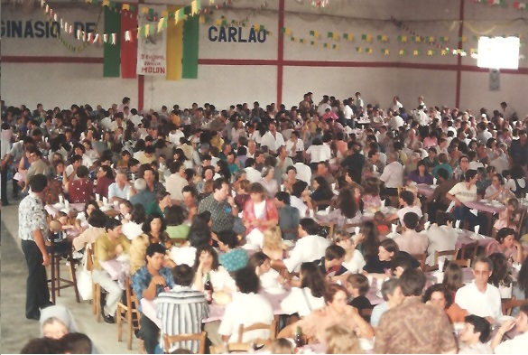

2º Encontro - 1993
13 e 14 novembro - Otávio Rocha - Flores da Cunha/RS
Em 24 e 25 de outubro de 1993, esteve visitando Otávio Rocha e o Município de Flores da Cunha o Prefeito Prof. Paulo Antonio Savegnano e o ex-Prefeito, Servino Trevisan de Arzignano. A manchete do Florense, de 29/10/93, dizia: " Prefeito Italiano visita Flores da Cunha numa viagem sentimental".
O Jornal "O Florense" de 12.11.1993, apresentou um suplemento especial sobre o Encontro. E um dos artigos doi intitulado de " SALUTE!", com o seguinte texto:
"A Família Molon do Brasil se reencontra neste final de semana em Otávio Rocha, Flores da Cunha. Repartindo momentos de alegria e saudade se unem aos mais de 2 mil nomes locais, pessoas e caravanas de mais de 50 cidades e diversos Estados brasileiros. Irmanados no encontro, mensagens e preces em diversas partes do mundo, participarão destes momentos festivos, numa integração única e universal.
Os próprios integrantes da família se surpreenderam diante de tão expressivos números. Uma revista italiana se refere ao "exército brasileiro de Molons". Não menos expressivo são os dados que se tem sobre a presença de famílias Molon, em outros países e continnentes, em especial, na Itália. Lá, cem anos depois, dezenas de famílias revivem cenas tão nossas familiares de vinhedos, mesas fartas, canções e bons vinhos.
Assim o sobrenome MOLON, se sobrepõe a uma simples denominação de um determinado grupo, para representar uma história de sacrifícios, lutas e conquistas que nos levam a alguns séculos antes de Cristo, na Grécia, à travessia marítima, a caminhada em terras Romanas e o estabelecimento nas colinas do Vêneto. Dos dois mil anos de história, 110 foram também inscritos com muito sangue, suor e fé pela gente que abandou a Pátria-Mãe e, aqui plantaram a sua semente. Germinou fecunda e generosa. Motivos há, pois de sobra para a comemoração. Elevemos um brinde, com vinho da terra! Saúde! salute!"
Após uma visita a Itália e as regiões de partida dos imigrantes, a árvore genealógica foi alimentada com novas e surpreendentes informações. Nos livros de Registros da Paróquia Della Visitacione do Castello de Arzignano, no ano de 1700 foi encontrado o mais antigo registro, com o casamento de DOMENICO MOLON E MADALENA. Outras surpresas são os três casamentos de Giovanni Batista Molon e os casamentos dos irmãos PIETRO E GIUSEPPE MOLON, com duas irmãs ROSA E CATARINA também MOLON.
"O Brasil, terra de migrantes, recebeu a partir de l882, na região da serra gaúcha, os primeiros imigrantes com o sobrenome MOLON. Há registros da chegada de Antônio, filho de Giuseppe e Ana Bocchese, tendo aqui chegado com 32 anos e se estabelecido no lote rural nº 29, do Travessão Marcolino Moura, 10ª Légua da Colônia Caxias. Os antepassados de Antonio eram assim constituídos: GIUSEPPE e MADALENA MOLON, pais de PIETRO ANTONIO que casou com ANGELA TEZZA, pais de GIUSEPPE que casou com ANNA BOCCHESE. ANTONIO MOLON e REGINA GHIOTTO tiveram seis filhso: JOSÉ, TEREZINHA, ANA, GENOVEVA, MÁRIO e ANGELO.
Um segundo grupo, mais expressivo, chegou no ano de l883 de ARZIGNANO, Província de VICENZA: os irmãos PIETRO e ALESSANDRO e seu primo ANGELO, com suas respectivas famílias. Eles se estabeleceram em diversos lotes rurais no chamado Novo Território da Colônia Caxias, no Travessão Pinhal, área próxima a atual vila de Otávio Rocha, em Flores da Cunha.
A Família Molon, tem portanto uma história de mais de 2.000 anos e na atualidade, encontra-se espalhada em diversos continentes. No Brasil, há a presença de descendentes Molon em diversos Estados e algumas com uma outra origem migratória, diversa da do sul.
Segundo pesquisas de out/93, os antepassados conhecidos datam de 1700, com o casal DOMENICO MOLON e MADALENA. eles foram pais de PIETRO MOLON, nascido em 1747, e que casou com ANNA FARINON. PIETRO e ANNA, são pais de ANGELO MOLON, nascido em 06.04.1772. ANGELO casou com MADALENA CARLOTTO. Este ramo é identificado, na Itália, com o acréscimo de uma sub-identificação, como os "Molon de PIERRI’.
A partir do patriarca ANGELO MOLON e MADALENA CARLOTTO, que residiam na região de ARZIGNANO, Província de Vicenza, teve origem a maioria dos mais de 2.000 nomes que vivem no Brasil, sendo que há ainda descendentes na Itália. O casal teve os seguintes filhos: GIOVANNI BATISTA MOLON (1), casou com DOMENICA FAEDO: PIETRO MOLON (2) casou com ROSA MOLON, ela filha de outro MOLON Giovanni Batista e de Domenica Marzotto e GIUSEPPE MOLON (3) casou com CATARINA MOLON, ela irmã de ROSA.
GIOVANNI BATISTA MOLON (1) e DOMENICA FAEDO tiveram os seguintes filhos: ANNA (1-1); PIETRO (1-2) e ALESSANDRO (1-3). ANNA (1-1), nascida em l8l4, casou com ANGELO SCHENATO, tendo descendência na Itália, não tendo emigrado. Faleceu em l887.
PIETRO (1-2) nasceu em CHIAMPO em 28/08/l833 e casou em 04/03/l867 com Francesca Ziggiotti, que emigraram para o Brasil. Seus filhos todos nasceram na Itália em número de oito. GIOVANNI BATISTA; DEMÉTRIO; MÁXIMO; GIUSEPPINA; FELICE, ROMOLO, EMILIA VITÓRIA e PIETRO. PIETRO, último filho, nascido em 20/09/1881, com pouco mais de ano, teve o seu registro de saída na Itália anotado em diversos documentos, mas não há registro de chegada ao Brasil. Segundo depoimentos transmitidos pelo irmão Demétrio, o pequeno Pietro teria morrido no navio e seu corpo foi jogado ao mar.
ALESSANDRO (1-3) nascido em 19/05/1838 casou com TEREZA GENNARO em 09/11/1882 com a idade de 44 anos. Tiveram um filho único, PEDRO MOLON, nascido no Brasil e que casou com Maria Panizzon.
GIOVANNI BATISTA MOLON (1) depois de viúvo, casou com MARIA COARO, tendo mais um filho que lhe deram o nome de GIOVANNI BATISTA MOLON (1-4). Este filho daria origem ao ramo que se estabeleceu em Farroupilha/RS. Casou com Maria Magnabosco tendo os seguintes filhos: ROSINA, GIOVANNI BATISTA, ROMOLO, EMILIO, COLORINDA, ISMAEL, PEDRO, ESTHER JOSÉ FRANCISCO e ANGELO.
GIOVANNI BATISTA MOLON (1), casou pela terceira vez com MARIA LAZZARI., não tendo mais filhos.
Pietro Molon( 2) (nascimento em 03/-2/1802) casou com ROSA MOLON, em 1834, ela filha de Giovanni Batista Molon e de Domenica Marzotto. Tiveram 7 filhos: FRANCESCO ( 2-1) de 21/10/1835; GIUSEPPE (2-2), nascido em 1837 e emigrado para Monteccchio Maggiore em 1886; MADALENA (2-3) nascida em 21/03/1841 e emigrou para Montecchio Maggiore em 1897; ÂNGELO (2-4) nascido em 24/10/1844 E EMIGROU PARA O BRASIL; MARIA (2-5) nascida em 30/11/1847; PIETRO PAULO (2-6) nasceu em 28/08/1851) e faleceu em 24/03/1933 (descendentes residem na antiga casa mais que secular em Castello de Arzignano) e MASSIMINIO (2-7) nascido em 03/02/1855.
Apenas ÂNGELO (2-4) veio para o Brasil.
ANGELO casou com CECÍLIA ZILLIOTTO (nascida em 09/02/1851) filha de Giovanni e Natalina Zilliotto. O casamento foi em 28/11/1872.
ANGELO faleceu em Otávio Rocha em 17/07/1906, com 62 anos tendo do seu casamento 10 filhos: MÁRIO(I), italiano, ROSA (EURÓSIA) (II), italiana; MARCELLO (III), italiano; ANTONIA (IV) italiana; PEDRO (V) brasileiro; ELVIRA (VI) brasileira; GIUSEPPE (VII) brasileiro; UMBERTO (VIII) brasileiro; ROMANO (IX) brasileiro e AURÉLIA (X) brasileira.
GIUSEPPE MOLON (3) casou com CATERINA MOLON, ela filha de Giovanni Batista Molon e de Domenica Marzotto. tiveram os seguintes fiklhos: LEOPOLDO, CAROLINA, ELIA, LINO, MARGARITA e ELIA FRANCESCO, tendo permanecido na Itália".
No 2º Encontro foi prestada uma homangem a Santa Eurósia, devoção trazida pela família desde a Itália. Foi exibido um vídio sobre as cidades e locais de origem da Família na Itália, inciando pelo Porto de Gênova. A solenidade foi transmitida pela Rádio Regional do Vêneto e havia um local para fazer fotos à moda antiga. Esteve presente a Banda Florentina de Flores da Cunha
Mensagens: "Como Pároco da Paróquia de Otávio Rocha, no 2º Encontro da Família Molon, deixo meu fraterno abraço, desejando que a confraternização seja de crescimento na fé, no amor, na fraternizdade e na paz. Que Deus, por intercessão de São Marcos e Santa Eurósia abençoe a todos copiosamente. Pe. Antônio Pasa."
O "Pioneiro" de Caxias do Sul, edição de 15/11/199, na contra capa, destacava: "Família Molon se reencontra. Mesa farta e canto marcaram festejos pelos 110 anos da chegada ao Brasil. Os padres Moacir Molon e Olavo Molon Bombardelli celebraram uma missa muito especial na manhã de ontem, em Otávio Rocha. A igreja matriz estava lotada por mais de mil descendentes de Ângelo Molon e Madalena Carlotto, que residiam no forte de Arzignano, na privíncia italiana de Vicenza. Pessoas de 50 cidades brasileiras, e até mesmo do exterior, comemoraram os 110 anos da chegada dos imigrantes Molon, revivendo as cenas familiares de devoção, mesa farta e cantoria. Uma equipe com cem integrantes preparou e serviu os 700 quilos de carne, cem quilos de agnolini, 200 quilos de maionese e 500 litros de vinho (das adegas Molon) pagos pela alegria do reencontro... Carregando ovelhas nos ombros, as crianças que constituem a 10ª geração dos Molon desfilaram pelo salão de festas anunciando a despedida."

|
 |
{kind=link}
{kind=link}
{kind=link}
{kind=link}
{kind=link}